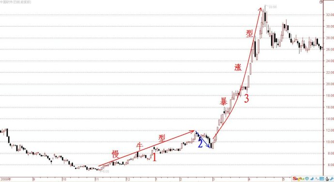

第272篇•教你炒股系列66:主升浪的形态（17）
谷为陵
（3）热门概念股
我们常说概念、热点、题材，但多数人并未将三者搞清楚，经常混为一谈，其实，这三者是有区别的。题材是针对某个股票所拥有的某个具体的利好的，概念是针对股票所具有某种板块或者行业属性的，而热点是针对市场热炒的板块的。比如，对于黄金的概念、热点、题材的关系，我们可以这样说：“现在市场热点是炒黄金板块，而现在有一只股票因公告了注入金矿题材，而具有了黄金概念，成为了黄金概念股”，这大致就道出了三者之间的关系。
投资者对于股市里的概念并不陌生。如，2000年的网络概念，2006年至2007年的有色金属概念与券商概念，2009年的新兴行业概念，2010年的稀土与黄金概念，2011年的文化传媒概念，2012年的金改概念、三沙市概念、页岩气概念、地热概念，等等。
所以，我在谈概念股的时候，就一定是在讲某只股票具有什么样的板块或者行业属性。当某些板块或者行业成为了股市热炒的对象时，该板块或者行业里的一些股票就成为了热门概念股。在股市热炒这些概念的时候，这些热门概念对于股价的促涨作用，与个股的重大利好题材的作用是非常相似的，也往往会引发股票的暴涨型主升浪，这些概念股也就成了黑马股或者大牛股。
这样的案例也很多。如，中国软件，该股自2008年11月至2009年4月，股价从5元（前复权）暴涨到了33.7元，该轮上涨走势也是属于前慢后快型两波主升浪形态。该股的第二波暴涨型主升浪，完全与业绩无关，也与该股的题材无关，只是与当时热门的软件行业概念有关，因为当时传出国家将推出某些振兴软件业的政策。中国软件的走势如下图所示：
应该说，暴涨型概念股还是比较好操作的，但在操作时应该把握几点：
其一，要在第一时间搞清楚市场出现的新的炒作概念。从A股历史上的主流概念形成的机制分析，A股的主流概念主要来自于三方面：
①来源于重大政策。A股是个政策市，重大政策往往会引发板块、行业或者股市出现概念性行情。
②来源于新兴行业的新机会。新兴行业的发展空间很大，但又无法准确估值，没有市盈率只有市梦率，这就给参与者提供了很大的想象空间，相关概念股往往涨幅惊人。这么多年来，A股出现的很多新兴行业的热门概念，并非是本土创造出来的，而是嫁接于大洋彼岸的美国市场，因为美国是一个创新的国度，一直引领着全球产业的创新浪潮。比如，A股出现的网络概念、IT概念、石墨烯概念、页岩气概念等，都是受到美国市场的影响。一般来说，当美国市场出现了一个很热门的炒作概念后，A股也会跟风炒作。
③来源于被成功炒作的、涨幅巨大的龙头股。当某些股票因行业景气而业绩暴增后，股价被爆炒，涨幅巨大。在这些龙头股的示范作用下，该龙头股所属板块就会称为炒作的热点，该龙头股所属行业就会被注入热门概念。比如，前两年黄金股被爆炒，黄金概念就炙手可热，很多上市公司为了让股价上涨，就纷纷注入黄金矿；再如，这两年来，稀土股被炒翻天，稀土概念就横空出世，很多上市公司也纷纷与稀土“结亲”，股价也是牛气冲天。
其二，要抓龙头股。每一个热门概念，一般只有一两只龙头股，还是很好辨别的。辨别龙头股有两个方法：其一是看行业地位，行业龙头股往往就是市场龙头股；二是看股价涨势，涨得最猛的就是市场选择的龙头股。在多数情况下，行业龙头股与市场龙头股是一致的，但有时候也有变化，我在《第262篇•从沧州大化与江山股份走牛谈周期股选股思路》中谈到了这个问题。抓龙头股的好处是，由于龙头股率先上涨，且涨幅最大，即使追涨买入，也会获利不菲。
其三，最好要在龙头股启动的前3个涨停板之内买进，买进越早越好。在暴涨型主升浪启动的前3个涨停板之内买进，就属于“黄金买点”。由于概念股的暴涨与题材股的暴涨是不同的，题材股因重大利好的突发性而致其股价暴涨时往往是连续“一字板”，而概念股绝大多数是连续大阳线涨停板。既然是大阳线涨停板，那么，在其每一个交易日中，就会有较为充分的换手以及还算充裕的买进机会，只要眼疾手快，还是能够买进去的。
（未完待续）